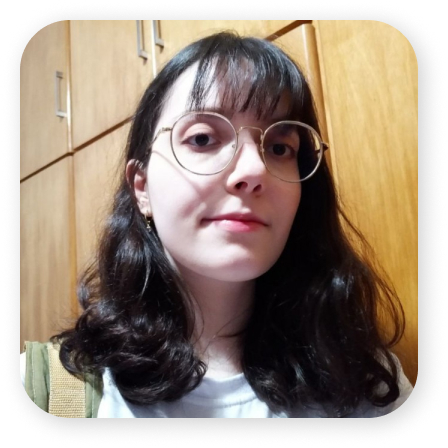

Marina Paiolla Forastiere
UX/UI Designer Júnior
Tenho experiencia com criação de layouts e protótipos de paginas web e aplicativos mobile. Breve experiência com criação de produtos gráficos como panfletos, banners e livretos.
Formada em Jogos Digitais, estudando UX/UI Design e programação web.Sempre a procura de novos desafios e conhecimento. Apaixonada por aprender e criar coisas novas.
